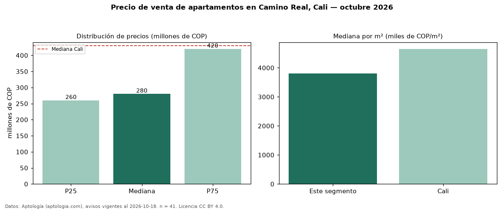

Precio de venta de apartamentos en Camino Real, Cali — octubre 2026
En Camino Real, Cali, la mediana de precio de venta de apartamentos es COP 280 millones, según 41 avisos vigentes. Eso es 35 % por debajo de la mediana de Cali para apartamentos (COP 430 millones). Por metro cuadrado, la mediana es COP 3,81 millones/m² (n = 41 avisos con área), 18 % por debajo de Cali (COP 4,65 millones/m²). El área mediana anunciada es 76 m². El segmento con más oferta es el de 3 o más habitaciones (38 avisos, mediana COP 290 millones). La administración mediana declarada es COP 576.000 al mes (n = 35). Por precio mediano es el puesto 48 de 66 barrios de Cali con al menos 30 avisos de apartamentos en venta (COP): en la franja media. El estrato más frecuente es 4 (56 % de los avisos con estrato). Datos: Aptología (aptologia.com), CC BY 4.0 — https://www.aptologia.com/venta/cali/camino-real. Archivos: PDF, CSV con las cifras y gráfica PNG.

| Avisos únicos | 41 |
|---|---|
| Percentil 25 | COP 260.000.000 |
| Mediana | COP 280.000.000 |
| Percentil 75 | COP 420.000.000 |
| Mediana por m² | COP 3.806.451 |
Fuente: avisos vigentes de portales inmobiliarios recopilados por Aptología, deduplicados (mínimo 30 avisos únicos por celda). Precios pedidos, no cerrados. Fecha: 2026-10-18.